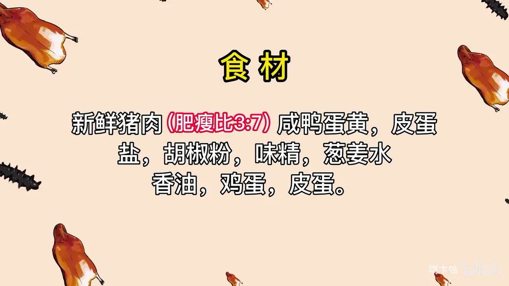
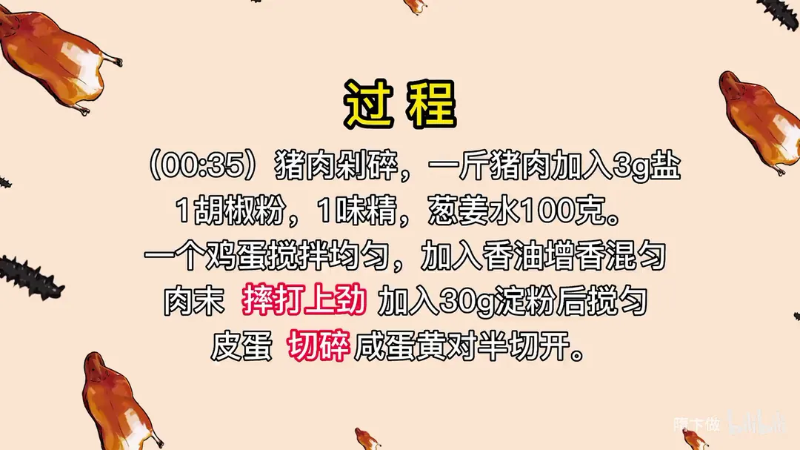
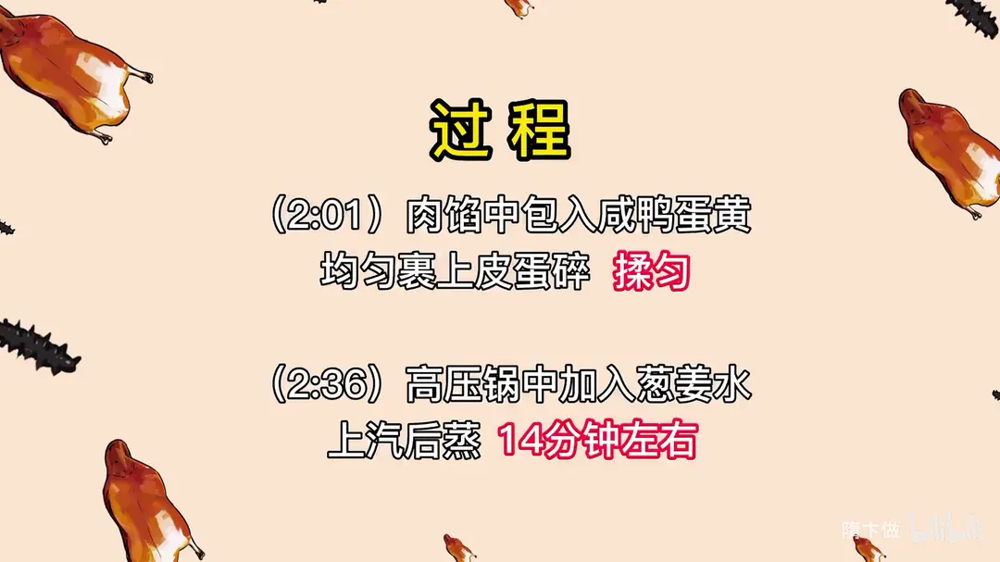
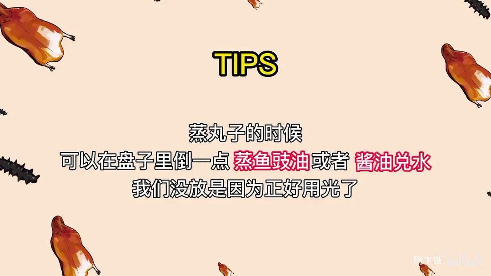

皮蛋肉丸
隋卞一做。新鲜猪肉按肥瘦 3:7 剁碎，加葱姜水摔打上劲，包入咸鸭蛋黄、裹上皮蛋碎，高压锅上汽蒸十四分钟，咸鲜里带皮蛋香。
原视频：https://www.bilibili.com/video/BV14T411s7YD
食材
新鲜猪肉、咸鸭蛋黄、皮蛋 等 10 样
| 类别 | 用料 | 用量 |
|---|---|---|
| 主料 | 新鲜猪肉（肥瘦比 3:7） | 一斤 |
| 主料 | 咸鸭蛋黄 | 适量 |
| 主料 | 皮蛋 | 适量 |
| 肉馅调味 | 盐 | 3g（每斤猪肉） |
| 肉馅调味 | 胡椒粉 | 1g（每斤猪肉） |
| 肉馅调味 | 味精 | 1g（每斤猪肉） |
| 肉馅调味 | 葱姜水 | 100g（每斤猪肉） |
| 肉馅调味 | 鸡蛋 | 1 个（每斤猪肉） |
| 肉馅调味 | 香油 | 适量 |
| 肉馅调味 | 淀粉 | 30g（每斤猪肉） |
步骤
- 剁肉调味：猪肉剁碎，一斤猪肉加入 3g 盐、1g 胡椒粉、1g 味精、100g 葱姜水。
- 摔打上劲：加一个鸡蛋搅拌均匀，加入香油增香混匀，肉末摔打上劲，加入 30g 淀粉后搅匀。
- 备馅料：皮蛋切碎，咸蛋黄对半切开。
- 包丸子：肉馅中包入咸鸭蛋黄，均匀裹上皮蛋碎，揉匀。
- 蒸制：高压锅中加入葱姜水，上汽后蒸十四分钟左右。
小贴士
- 蒸丸子的时候，可以在盘子里倒一点蒸鱼豉油或者酱油兑水，我们没放是因为正好用光了。
讲解要点
难度：★★☆☆☆（做法简单，难在选肉和咸蛋黄的品质，成败全在咸蛋黄沙不沙）
为什么这么做
- 剁肉而不买肉馅：机器绞的肉粒彼此分开、黏度低，一蒸就散；手剁的颗粒大小不匀，纤维互相拉扯，抱团力强。
- 肥瘦 3:7：肥肉太少蒸出来发柴，多了又会出油；这一比例蒸完润而不腻。
- 摔打肉馅、蛋黄也要摔紧：肉纤维互相咬合后丸子才不裂；摔打同时把丸子表面的肉压紧，裹皮蛋时才挂得住。
- 加 30g 淀粉（或 25g 淀粉水）：淀粉在肉表面形成薄薄的黏合层，高温下快速定型，同时锁住汁水。
- 咸蛋黄包在中心：蛋黄本身有油有咸味，受热后把油脂和咸香渗进周围肉馅，也把肉和皮蛋的味道连起来。
- 外层裹皮蛋碎：皮蛋质地软、表面不平，裹上去蒸完形成一层皮，皮蛋香在蒸汽里渗进肉里，同时防止丸子表面被蒸干。
- 用高压锅而非普通锅：普通锅蒸出来的肉偏硬，高压环境下蒸汽温度高，同样时间肉更松软。
容易翻车
- 买来的咸蛋黄不沙不流油，成品就没有「沙沙」的口感，这一步对成品影响最大。
- 肉馅若摔打不足，丸子蒸后容易塌、裂，表面也不光滑。
- 丸子裹好皮蛋后要尽快上锅，放久了皮蛋出水，包裹会滑落。
- 高压锅上汽时间不要沿用普通锅的时长，丸子偏硬就补几十秒，别一次性加太久。
热评补充
- 预包装咸蛋黄不是人造的，多数是生咸蛋磕出后取出、再包装的蛋黄；做蛋黄酥这类点心时通常要先喷点白酒烤熟再用。这类蛋黄品质普遍不错，但直接蒸不如烤过香。买不到流动出油的蛋黄，可以试试这条路子。
原片尾卡




原片文案
AI 字幕校准稿
去了一趟长沙，今天先来第一个：茶颜悦色同款皮蛋肉丸。肉丸的鲜香味和皮蛋那种味道特别柔和，咸蛋黄最后吃是沙沙的感觉，咸蛋黄让肉和皮蛋的味道又再次升华了。
怎么做？咱们选一块猪肉，先切成片，然后切碎，不用多好的刀工，切碎就行，然后剁。这会儿好奇的同学要问了，直接买肉馅行不行？真不行。虽然都是颗粒状，但买的那种肉馅是一粒是一粒的，黏度不够。咱们剁的有大有小、不太均匀，每根纤维拉得很紧实，便于成型。剁到碎、但还有点颗粒感就行。
然后调味：五克盐、一克胡椒粉、一克味精，加葱姜水。你看它有粘连感，很黏，纤维都在相互拽着拉着，跟肉馅完全不一样。摔打上劲，加上一点香油增香，再加上二十五克淀粉水，打上劲就行了，放在旁边备用。
皮蛋切小一点的粒，切完放在大盘里扒拉开。然后是里面最灵魂的咸蛋黄。买的时候就买成袋的咸蛋黄，第一它便宜，第二如果咸鸭蛋自己剥，它不成形，留油，包肉馅不太好包。把咸蛋黄切两半，这么大差不多包一个。
摔是为了让它紧实，让表面的肉相互粘连。放到皮蛋上面滚一滚，多摔几下。接下来就上锅蒸了。我记得吃这个肉的时候它应该是很松软，这种松软程度放在普通锅里是达不到的，所以得用高压锅。往里边加上水，刚才剩的葱姜也倒进去，沸水滚的时候会增加肉的香味。高压锅里放一个篦子，做好的肉丸放在里面，上气后先蒸六分钟看看，因为我这一回没做过。
时间到了，看一眼行不行——样子差不多，还有点硬，再来半分钟。反复试，再看看。这会儿差不多了，因为我们吃的那个皮蛋也是这种不成型的样子。但感觉我们这个咸蛋黄好像没有它那个沙沙的感觉，整体味道已经很像了。不知道是蛋黄的问题还是其他的问题，我们再把蛋黄单独蒸一下试试，做个调整。
另外我感觉这肉馅吃着有点太紧实了，加个鸡蛋。好了，看这样怎么样。这还不是那种沙沙的感觉，这个蛋黄不行。等一下，我去买咸鸭蛋。去晚了，店里就剩四个了。能不能成就看这一把了。你看这样肯定有那种沙沙的口感——完美。这次觉得应该差不多了，凌晨一点了，还在那边给人研究皮蛋。
后来终于明白了：原来咱们折腾半天，问题都出在咸蛋黄上面了，很关键很关键，可能我们选的那个品质不太好。猪肉的鲜味，加上皮蛋的香，和中间那种拉沙的咸蛋黄，完全都是融化的状态，跟我们在湖南吃到的一样。很不容易，太不容易了。